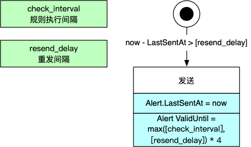

Prometheus报警逻辑分析
本文分析Prometheus的Alerting Rule的执行逻辑。
领域模型
在Prometheus的定义中，报警规则由AlertingRule来描述，而AlertingRule则被归到Group中，比如下面的配置文件例子：
groups:
- name: example
interval: 30s
rules:
- alert: HighRequestLatency
expr: job:request_latency_seconds:mean5m{job="myjob"} > 0.5
for: 10m
labels:
severity: page
annotations:
summary: High request latency
每个AlertingRule在运行时还维护具体的报警对象（Alert）。
下面是领域模型：

报警逻辑
Prometheus会根据group.interval规定的时间，定时来执行AlertingRule（执行Eval方法），然后发送报警到Alertmanager，最后再更新AlertingRule的状态、Group的状态。

规则执行逻辑
上图已经说明了，执行报警规则第一步是执行表达式（expr属性），然后是根据表达式执行结果，管理Alert对象，逻辑如下：

Alert对象有三个状态：
- Pending：活跃但是还未发送给Alertmanager，是Alert对象的初始状态。
- Firing：长发送到Alertmanager。
- Inactive：不活跃，即当前没有触发报警。
- 虚拟状态“被删除”
三种状态的迁移逻辑：
Pending -> Firing
Alert对象当前处于Pending，触发报警规则，且距离初次活跃时间（Alert.ActiveAt）超过<for>（AlertingRule.holdDuration）的时长，那么这个Alert对象就会变成Firing状态。
Pending -> 被删除
Alert对象当前处于Pending状态，不触发报警规则，那么这个Alert对象就直接被删除。
Firing -> Inactive
Alert对象当前处于Firing状态，不触发报警规则，那么这个Alert对象会变成Inactive状态。
Inactive -> Pending
Alert对象当前处于Inactive状态，触发报警规则，那么这个Alert对象会重置为Pending状态。
Inactive -> 被删除
Alert对象当前处于Inactive状态，且保持超过了resolved_retention时长，则被删除。
报警发送的逻辑
AlertingRule执行之后，会把Firing状态的Alert发送出去，逻辑如下：

更新AlertingRule规则
最后更新AlertingRule的状态，逻辑如下：